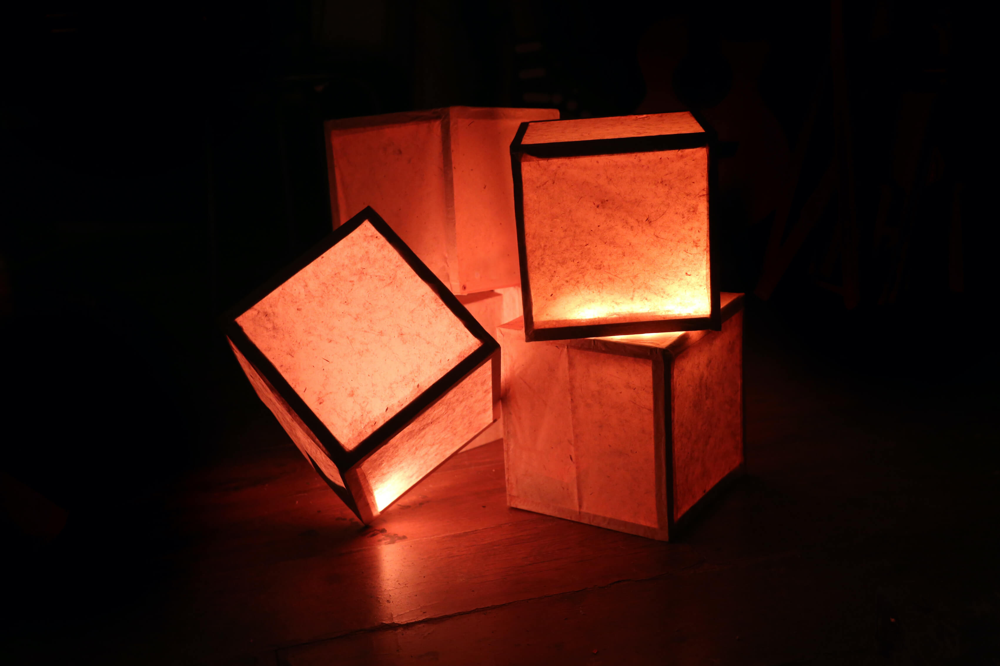

The voice & responsive lighting
A realtime response to the human voice. Become captivated in a warm glow to the sound of sultry tones. The combination of choral music and light. Two of the purest elements in our lives together playing in harmony.
With scope that extends beyond music performance into the realms of therapy and mindful spaces, this piece has unlimited potential for reflection, contemplation & healing.
A custom PCB was created to live within the light diffuser. This allows for any semi-transparent structure to become an audio-reactive piece, bringing life to static objects during performance.
These modules are wireless and rechargable. Software was written to take advantage of the SparkFun Sound Detector’s envelope function and adjust the LEDs corresponding brightness according to the ambient amplitude. Bespoke to each performance, the colour, light patterns and microphone sensitivity can be changed to suit the environment. An ATTINY 85 microcontroller was used for system control.
Custom PCB fabcrication

Wooden frames with recycled paper diffusion